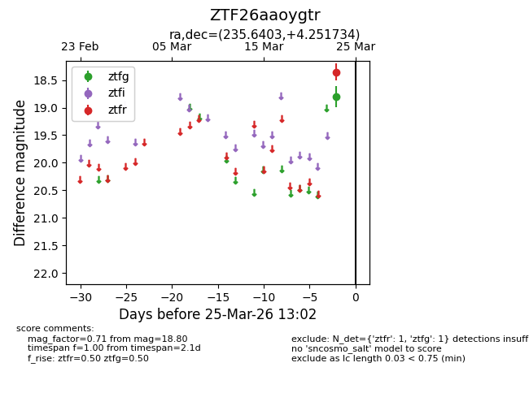
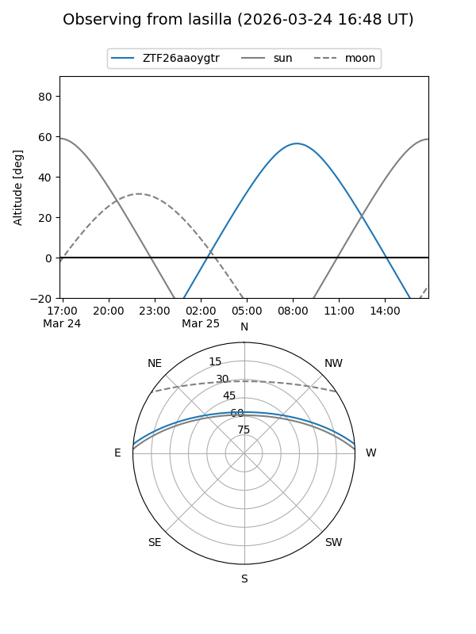
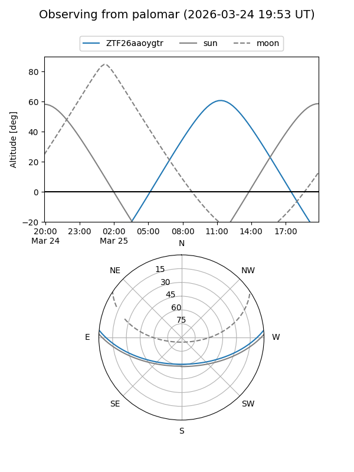

ZTF26aaoygtr
Target ZTF26aaoygtr at 2026-03-25 13:04
Aliases and brokers:
FINK: link
Lasair: link
ALeRCE: link
alt names
ZTF26aaoygtr (ztf,fink_ztf)
Coordinates:
equatorial (ra, dec) = 235.6403,+4.25173
equatorial (HMS+DMS) = 15:42:33.66,+04:15:06.24
galactic (l, b) = (11.3614,+43.25306)
Flags:
Photometry:
last ztfg=18.80, ztfr=18.35
1 ztfg, 1 ztfr detections
Lightcurve

Visibility


Additional plots